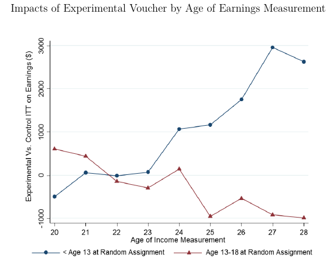
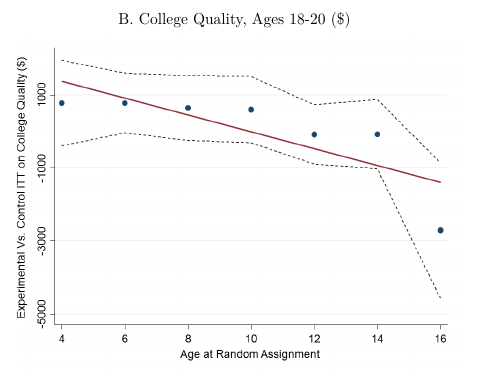

Human Capital and Mobility
ECON 383: Economics of Discrimination
Winter 2018
Human capital
- The skills that people can invest in that improve productivity are called human capital
- Job training, education, experience, etc
- Human capital investments are the primary way people increase wages in the market (that's why we're all here!)
Labor market discrimination
- Wage gaps shrink when controlling for "observables"
- Black/white and Hispanic/white wage gaps shrinks ~20% when controlling for education
- Differences in education (human capital) are the primary reason we see differences in labor market outcomes
Human capital acquisition in theory
- Human capital is an investment
- Agents will invest so long as return (in present value) is greater than cost
- Homogeneous agents (all the same) will invest in the same amount of human capital, have the same wages in equilibrium
- To generate differences, we need a friction that affects agents differently
Intergenerational human capital investments
- In the "baseline" model, agents choose their own level of human capital
- Real world human capital is determined by parents and environment
- 2nd graders don't have access to credit markets, can't change schools/buy better books etc
- Parents face constraints (frictions): wages, debt, time, etc
Early childhood education
- Education investments have substantial returns when children are very young (preschool)
- Parental involvement (mothers) also affects later-life outcomes
- Low income parents have less money to invest in preschool, less free time to spend with children
- Significant gaps occur before children reach school
Concentrated poverty
- Affluent communities have many resources available for parents and children (quality childcare/schools, financial institutions, low-crime, job connections, etc)
- Poor communities often lack these things (geographic statistical discrimination)
- Areas of concentrated poverty will lack opportunities for parents/children relative to areas of concentrated privilege
- Prejudice laws/restrictions segregate races into concentrated areas, frictions prevent people from moving out of concentrated poverty
Segregation in American cities
Neighborhood effects
- Ability to move up skill/wage ladder is highly correlated with neighborhood characteristics
- Likelihood of making more money than your parents is much smaller when county is more segregated
- Areas with higher fraction of black residents have less upward mobility
Causality
- Do neighborhoods cause people to be less able?
- Do less able people sort into neighborhoods?
- To isolate effects of neighborhoods, need a source of exogenous variation (an "experiment")
- Can't simply look at people who choose to move out of neighborhoods
Moving to Opportunity (MTO)
- Program administered by Department of Housing and Urban Development
- 4,604 families enrolled in Baltimore, Boston, Chicago, Los Angeles, New York
- 1994-1998
- Families all have children and resided in public/project-based housing, high-poverty communities (>40% poverty)
- Predominantly black and Hispanic families
MTO Program
- Families randomized into three groups:
- Housing vouchers to move into private housing in low-poverty area (<10% poverty)
- Housing vouchers to move to any area (Section 8)
- Control (no voucher)
- Random assignment \(\rightarrow\) causal estimates
Initial results
- No average increase in wages/labor market outcomes after 5 years
- Slight changes in mental health for first group
- Boys were significantly worse off after moving than girls (more behavioral problems, etc)
Chetty, Hendren, Katz (2015)
- The Effects of Exposure to Better Neighborhoods on Children: New Evidence from the Moving to Opportunity Experiment
- Authors hypothesized that effects of MTO should be strongest for younger children, who have more exposure to better neighborhoods
- Link MTO participants to individual tax data many years later (MTO recorded SSNs)
Data
- Tax data contains information on:
- Earnings
- College attendance
- Marital status
- Address
- Combine with other data on neighborhood characteristics, school quality, etc
Neighborhood exposure
- Children who received the voucher were able to spend their childhoods in lower-poverty neighborhoods
- Younger children spent a longer time in these neighborhoods
- Authors speculate the neighborhood effects might be cumulative, longer time = more benefit
- We would expect outcomes to be better for kids who received the vouchers early in life

Income
- Children that received voucher had substantially higher incomes
- Older children had lower incomes (moving in high school is hard)
- Children of parents who used the voucher did even better, 31% increase in wages ($3,477)
- Section 8 group also saw increases, but smaller
College attendance
- Children 5.2% more likely to attend college
- Effects strongest for younger children
- Children also attended better colleges

Marriage and fertility
- Program participants 1.9% more likely to be married
- Double for young girls
- No effect on fertility
- 6.8% increase in fathers present at birth
Adult neighborhood choice
- Children who receive voucher live as adults in places with:
- Lower poverty
- Less racial segregation
- Higher mean income
- Lower percentage of female-headed households
Short-run vs long-run
- What about the increase in behavioral problems among boys?
- Effects are completely reversed by adulthood
- Moving is difficult on children, but new communities might give more second chances/rehabilitation opportunities
- Youth behavioral problems not cause poor outcomes in adulthood!
Cost/benefit
- Lifetime earnings of children increases $302,000 as a result of the program ($99,000 in present value)
- This implies an additional tax revenue of $11,000 (PV)
- Program costs $3,783 per family
- Huge returns on public investment!
Upward mobility and geography
- Ability to earn more money than your parents is strongly correlated with geography
- People who are raised in certain neighborhoods much less likely to get ahead


Urban geography and concentrated poverty
- Moving is costly, families need help to get their kids into better environments
- Urban areas becoming increasingly wealthy, high-tech jobs
- Cost of living increases in better neighborhoods, making moving more costly
- Displaced low-income families compete for limited affordable space in cities
- Housing prices go up, take home income goes down, poverty is further concentrated